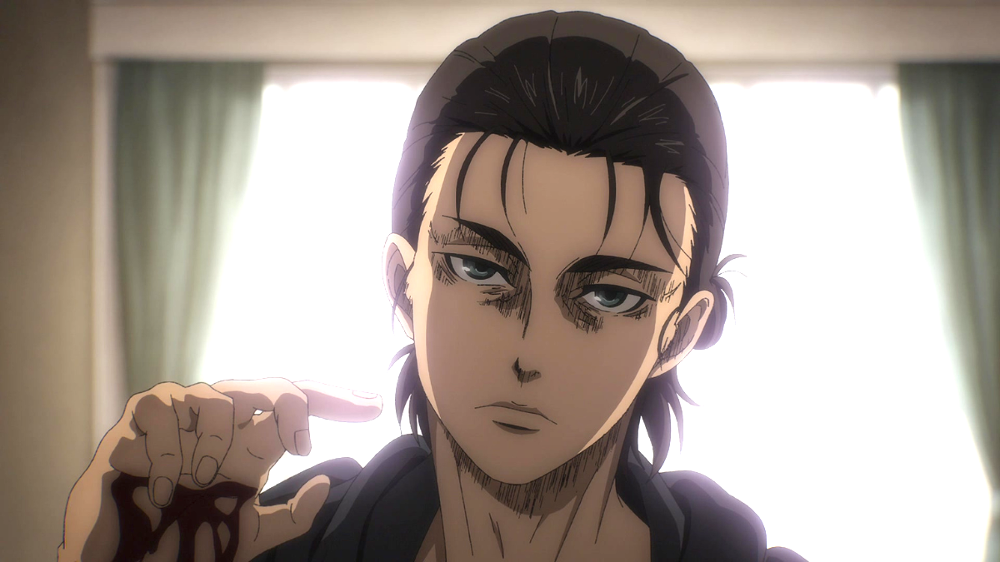
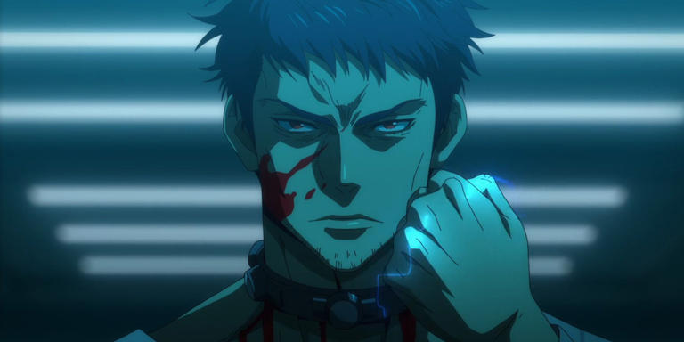
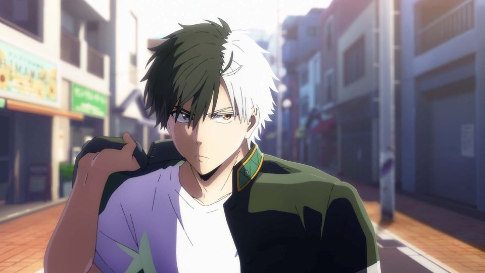
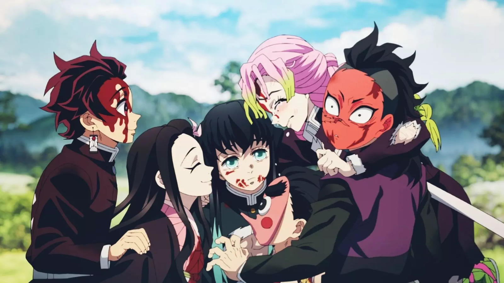

IMAGE GALLERY
 |
 |
 |
 |
MONKEY D LUFFYMonkey D. Luffy, commonly known as "Straw Hat Luffy" or simply "Straw Hat",is the founder, captain, and strongest combatant of the increasingly infamous and powerful Straw Hat Pirates. He fearlessly pursues the legendary treasure of the late Gol D. Roger in order to become the new Pirate King |
ICHIGO KUROSAKIIchigo Kurosaki is a fictional character in the Bleach manga series and its adaptations created by author Tite Kubo. He is the main protagonist of the series, who receives Soul Reaper powers after meeting Rukia Kuchiki, a Soul Reaper assigned to patrol around the fictional city of Karakura Town. |
SUNG JINWOOSolo Leveling, also alternatively translated as Only 1 Level Up is a South Korean web novel written by Chugong. It was serialized in Kakao's digital comic and fiction platform KakaoPage beginning on July 25, 2016, and was later published by D&C Media under their Papyrus label since November 4, 2016. |
EREN YEAGEREren Yeager is the protagonist of the Attack on Titan manga. Eren is a teenager who swears revenge on enormous man-eating humanoid creatures known as Titans, who have forced what remains of the human race to live in walled off cities and devoured his mother while destroying his home town in the Shiganshina district of Wall Maria. |
 |
 |  |  |
NARUTONaruto is a Japanese manga series written and illustrated by Masashi Kishimoto. It tells the story of Naruto Uzumaki, a young ninja who seeks recognition from his peers and dreams of becoming the Hokage, the leader of his village.The story is told in two parts: the first is set in Naruto's pre-teen years and the second in his teens |
NINJA KAMUINinja Kamui (stylized in all caps) is an original anime television series produced by E&H Production and Sola Entertainment with executive production by Williams Street. The series aired from February to May 2024 in the United States on Adult Swim's Toonami programming block and in Canada on Adult Swim Canada. |
WIND BREAKERWind Breaker (stylized in all caps) is a Japanese manga series written and illustrated by Satoru Nii that began serialization on Kodansha's Magazine Pocket manga website in January 2021. As of May 2024, the series' individual chapters have been collected in 17 tankōbon volumes. An anime television series adaptation produced by CloverWorks aired from April to June 2024. |
DEMON SLAYERDemon Slayer: Kimetsu no Yaiba "Blade of Demon Destruction")[4] is a Japanese manga series written and illustrated by Koyoharu Gotouge. It was serialized in Shueisha's shōnen manga magazine Weekly Shōnen Jump from February 2016 to May 2020, with its chapters collected in 23 tankōbon volumes. It has been published in English by Viz Media and simultaneously on the Manga Plus platform by Shueisha. |